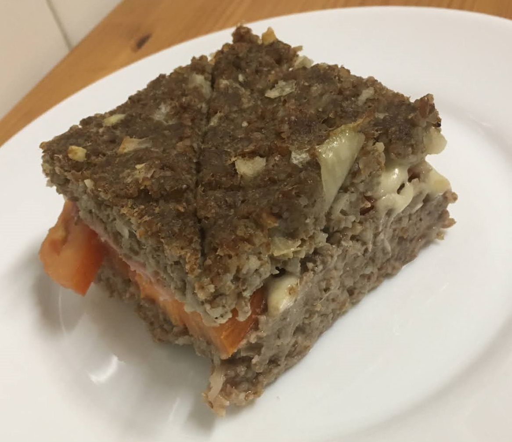

Quibe

Ingredientes
- 500 g de trigo para quibe
- 700 g de água fervente
- 1 kg de carne moída
- 2 cebolas picadinhas
- 6 dentes de alho picadinhos
- 6 folhas de hortelã picada (opcional)
- sal e pimenta QB
Modo de preparo
- Colocar o trigo de molho na água fervente por 1 hora.
- Misturar a carne com o trigo hidratado, juntar os temperos e misturar bem (pode-se usar um processador).
- Moldar os quibes e fritar, assar ou congelar.
Observação
- Para cada xícara (chá) de trigo para quibe (170 g), hidratar com 1 xícara (chá) de água (240 ml).
- Receita do SENAC.